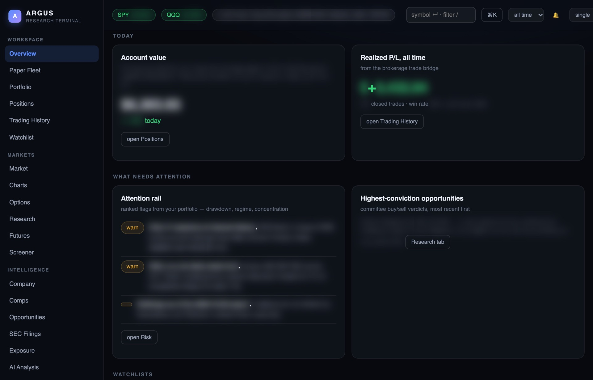
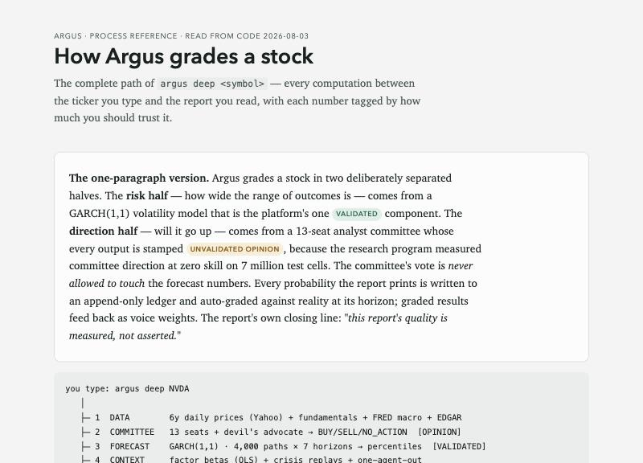

Selected work / Research system
Argus 2.0
A research tool for testing whether an investment idea beats doing nothing, built to catch false positives. Rules and pass marks are written down before any test, the data tool refuses to let a test see information from after the decision date, and rejections are logged as results. Simulated trading only: no real money, and no code that can place an order.
- My role
- Objective, test design, stop and fix decisions
- Built with
- Claude Code, Codex, Python standard library
- Period
- Sep 2026 to now (first version mid-2026)
- Status
- Working locally; paper trading only
At a glance
- Problem
- Backtests make bad trading ideas look good.
- What I did
- Set the rules, baselines and stop decisions; chose the fixes when problems surfaced.
- Result
- A flattering +168% exposed as survivorship bias; 7 rules rejected on criteria written beforehand; simulated trading only.
- Built with
- Claude Code, Codex, Python standard library

What it does
Argus answers one question: does a trading rule make money after costs, compared with doing nothing clever? It runs the rule on historical data, scores it next to buying the S&P 500, an equal-weight portfolio and cash, and checks it against controls built to catch luck: shuffled signals, re-runs on random subsamples, and 200 coin-flip traders per test group. Candidate rules then run forward in simulated paper accounts: as of 20 Oct, 20 candidate rules in 29 accounts (the rest are controls), heading for a first review in late December.
Why I built it
Backtests are easy to fool. The first version of Argus (mid-2026, now archived, coded in VS Code with GitHub Copilot) taught me that: 0 of 20 tradeable strategy candidates cleared a bar adjusted for how many ideas had been tried (a separate set of quality features passed a weaker ranking test). So I closed its return-prediction side rather than loosen the bar, and kept the one part that beat its baseline, a volatility model. Argus 2.0 started from scratch in September with the lesson built in: judge whole strategies by net results against baselines, with the rules fixed in advance.
A reference page from August, written by Claude from the first version's code, shows the same discipline: the direction model was stamped 'unvalidated opinion' after testing at no skill across 7 million test cells, and only the volatility model was trusted.


My role and the AI's role
- Me: the objective (I changed it on day one from forecast accuracy to net results), the scope of each test (for example, pushing a strategy test from three famous stocks to all 508 in the index), the decision to run a forward paper fleet, holding back the last two test slots, and choosing between fixes when problems surfaced.
- Claude Code: wrote the engine, the tests and the experiments, and runs the daily paper fleet on a schedule.
- Codex: wrote the build specification that Claude Code implemented, and later reviewed the documentation.
I didn't write the code. Live auto-trading was assessed and deliberately not built.
How it works
- Contract first. A written strategy contract states each rule and its pass criteria before it runs: net profit; at least matching equal weight; profitable at double costs; profitable without its three best trades; enough trades; a drawdown limit. Changing a rule after seeing a result needs a new version and uses a new slot from a fixed budget of 30.
- Point-in-time data. The code refuses any data dated after the decision, and tests prove it. S&P 500 membership is rebuilt for each date, company fundamentals become usable only after their SEC filing date, and reused ticker symbols are excluded.
- A held-back period. Data from 2024 onwards is reserved and still unused for the stock strategies.
- Write-once records. Every run and every paper-trading decision is hashed and chained, so later edits are detectable.
What I caught and changed
- Survivorship bias. The first momentum test used 65 companies that exist today and showed +168% over 2017 to 2023. Rebuilt on a universe of 580 companies that were index members at some point (410 to 476 had price data on any given date), it made +34.5%, against +85.6% for equal weight and +108% for the index. The old figure stays on file as evidence of the bias.
- Decisions logged too late. An audit found 41 of 75 paper-trading decisions had been logged after the market open they were meant to fill at, and only 10 were flagged. I chose the fix: derive the daily bar from 5-minute data. The contract carries a dated correction.
- Costs measured but not applied. Real bid-ask spreads were being reported but not charged. That was found on 18 Oct and fixed from 20 Oct.
Claude Code compiled a ledger of 25 dated mistakes from the project's records. Most were found by Claude's own checks, audits and daily reports, three by the compilation itself and one by a Codex review. I decided how to fix the larger ones.
How it was checked
- 59 unit tests, including tests that leak future data on purpose and must be rejected (re-run 20 Oct: all pass, 3 skipped).
- The headline backtests re-run from stored data by a research agent on 20 Oct, matching the recorded figures.
- 66 paper-trading hash chains with 446 records, 0 broken.
- A number checker on AI-written analysis: the save command refuses a note whose numbers or dates don't appear in the stored company data. It caught Claude's own miscounts on 15 Oct. Its limit is that it proves a number exists in the data, not that it's used correctly.
A safe demonstration
Argus has a synthetic-data demo mode. It generates fake prices, runs a full backtest and verifies the record chain in about 10 seconds, with no network. Everything about my own accounts or holdings is excluded from this site.
Where it is now
- Results: 7 rules rejected and the baseline rule not promoted. No rule has passed. Argus doesn't pick stocks or beat the market, and makes no claim to.
- Paper fleet: preliminary, with no result claimed before its review dates.
- Known gaps: some survivorship remains (104 former members have no price history), dividends are not included, and the project isn't under version control, so 'written before the result' rests on dated records rather than commits.
- First version: its larger claims (58 hypotheses, over 1,100 tests) can't be confirmed from the surviving copy and aren't made here.
Tools and credits
- Built with Claude Code (Anthropic) and Codex (OpenAI). Python standard library.
- Prices fetched read-only through a brokerage data connector; index membership history from Wikipedia's S&P 500 change log (CC BY-SA 4.0); company fundamentals from SEC EDGAR filings; interest rates from FRED.
- The paper-trading workspace reuses the web interface from the first version of Argus.
- The first version was coded in VS Code with GitHub Copilot.
Status checked 20 Oct 2026. The headline backtest figures match those recorded in the project's documents and were re-run by a research agent on that date. All figures are backtests on market data fetched read-only through a brokerage data connector, plus SEC, FRED and Wikipedia sources; none involve my own money.